Electronique Numérique
Les circuits logique programmables PLD
Les circuits logiques programmables (PLD: Programmable Logic Devices) sont des composants électroniques permettant de créer des circuits logiques personnalisés. Contrairement aux circuits logiques fixes (comme les circuits intégrés TTL ou CMOS), les PLD peuvent être programmés pour répondre à des besoins spécifiques.
Le terme programmable peut prêter à confusion. Les PLD ne sont pas programmés au sens informatique qui consiste à implanter le code d'une application dans un microcontrôleur ou un microprocesseur. Le terme reconfigurable est plus adapté. En effet, un PLD est un circuit intégré qui contient un réseau d'opérateurs logiques de base qui ne sont pas interconnectés lors de la fabrication. L'utilisateur reconfigure le circuit en définissant les connexions entre les les éléments logiques nécessaires pour réaliser une fonction particulière.
Types de PLD
Beaucoup d'acronymes sont utilisés dans le domaine des PLD. Certains désignent des technologies, d'autres des générations de technologies, etc...
- PLA: (Programmable Logic array) sont les premiers PLD qui ont été développés. Matrice ET programmable, Matrice OU programmable. Permet une flexibilité maximale pour implémenter des fonctions logiques complexes
- PAL: (Programmable Array Logic) Simplification des PLA : seuls les réseaux AND sont programmables. Moins flexible mais plus rapide et plus économique.
- GAL: (Generic Array Logic) Version améliorée et plus flexible des PAL. Il sont REprogrammables grâce à leur réseau d'interconnexion de type EEPROM.
- SPLD: (Simple programmable logic device) Désignes les PLD de première générations. Quelques centaines de portes logiques et quelques dizaines bascules: Technologies PLA, PAL et GAL
- EPLD: (Erasable PLD) Terme générique pour désigner les PLD reprogrammable avec effacement par UV
- EEPLD: (Electrically Erasable PLD) Terme générique pour désigner les PLD reprogrammable électriquement
- CPLD: (complex programmable logic device) Circuits relativement complexes (jusqu'à une ou deux dizaines de milliers de portes). Constitué de blocs logiques programmables dont l'architecture des blocs dérive directement de celle des SPLDs. Peut implémenter des fonctions plus complexes que les PAL.
- FPGA: (field programmable gate array) Circuit qui peut être très complexe. Des centaines de milliers d'éléments logiques, avec des modules plus au moins sophistiqués et de la mémoire intégrée. (Capacité en constante augmentation).
L'idée de base, les PLA
Un système combinatoire est le plus souvent représenté par des fonctions sous la forme canonique somme. C'est une somme (OR) de produits (AND) des entrées et leurs compléments (NOT)
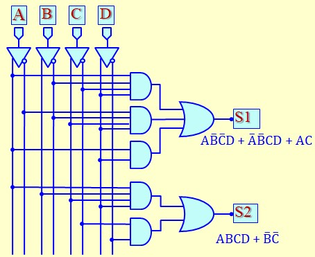On constate que nous avons besoins d'inverseurs, de portes ET, de porte OU et d'un ensemble d'interconnexions
Le circuit PLD sera donc constitué de :
- Un ensemble de bornes d'entrée,
- Un ensemble de buffers qui délivrent les entrées et leurs inverses
- Un ensemble de portes ET qui constitue la matrice ET 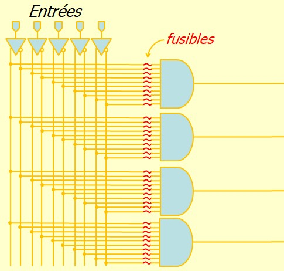
- Un ensemble de portes OU qui constitue la matrice OU 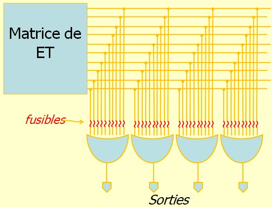
- Un ensemble de bornes de sorties,
Les deux matrices (ET et OU) sont programmables :
- Chaque porte de la matrice ET est connectée, via des fusibles, à toutes les entrées et leurs inverses.
- Chaque porte de la matrice OU est connectée, via des fusibles, à toutes les sorties de la matrice ET
- Lors de la programmation (reconfiguration), l'utilisateur, à l'aide d'un logiciel et d'un équipement spécialisés (programmeur) configure le circuit en détruisant les fusibles inutiles. Seuls les fusibles nécessaires pour réaliser la fonction logique souhaitée sont conservés
Simplification de dessin :
Pour alléger le dessin, on a adopté la convention ci-dessous :
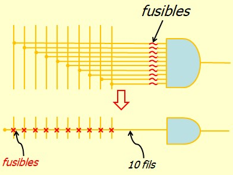Voici la représentation d'un PLA 4 entrées et 3 sortie
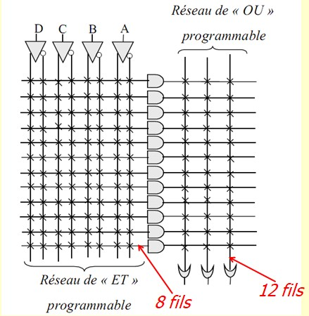PLA programmé :
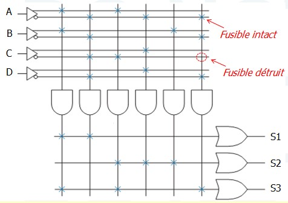 $$ S_1=AB+\bar{A}\bar{B}\bar{C}\bar{D} $$ $$ S_2=A\bar{C}+\bar{A}CD+B $$ $$ S_3=AB+A\bar{C}+\bar{A}\bar{B}\bar{D} $$Les PAL
Un PAL (Programmable Array Logic) est un PLA dont seule la matrice ET est programmables. La matrice OU est fixe.
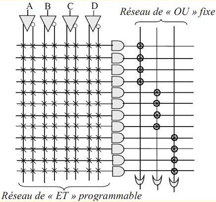Les PAL sont plus économiques mais moins souples. Par exemple, avec le circuit de la figure ci dessous, on ne peut pas synthétiser une fonction constitué de la somme de plus de 4 monômes
Points de connexion à fusibles :
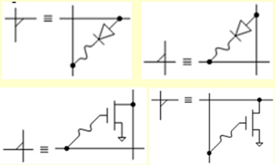- Des diodes ou des transistors MOS sont utilisés comme point de connexion entre les lignes et les colonnes,
- A la fabrication, tous les points de connexion (fusibles) sont conducteurs,
- Lors de la programmation, on détruit les fusibles non désirés par claquage. Cette technique consiste à appliquer pendant un court instant une tension supérieure à la tension de destruction (Break down voltage). Une fois claqué, le composant ne peut plus conduire, ce qui équivaut à couper la connexion,
- C'est un processus permanent et irréversible. Les circuits peuvent être programmés une seule fois. On parle de technologie PROM.
Points de connexion à anti-fusible
Contrairement à un fusible, un anti-fusible est initialement isolant. Lors de la programmation, l'application d'une tension ou d'un courant élevé provoque un court-circuit permanent. Cela établit une connexion électrique là où il n'y en avait pas initialement.
La figure ci-dessous illustre une des technologies utilisées. Deux conducteurs sont séparés par une couche très mince de matériau isolant (par exemple, du silicium amorphe). Lors de la programmation, l'application d'une tension élevée (environ 20 volts) transforme d'une manière permanente le matériau isolant en conducteur, établissant ainsi une liaison entre les deux conducteurs.

Les GAL :
- un GAL (Generic Array Logic) est une version améliorée et plus flexible des PAL,
- Les GAL sont conçus pour être REprogrammables. Ils peuvent être reprogrammés plusieurs fois grâce à leur points de connexion EPLD ou EEPLD,
- Les GAL sont souvent conçus pour être des remplacements directs des PAL dans les circuits existants, ce qui facilite leur adoption.
Point de Connexion EPLD :
- Le terme EPLD (Erasable Programmable Logic Device) s'inspire du terme EPROM (Erasable Programmable Read-Only Memory), car ces circuits utilisent le même type de transistor MOS à grille isolée que les mémoires EPROM.
- Ces circuits se distinguent par leur capacité à être effaçables par exposition aux rayons ultraviolets, ce qui les rend reprogrammables après effacement.
- Le point de connexion est basé sur un transistor MOS à grille flottante ou grille
isolée. Plus précisément, ce type de transistor comporte deux grilles :
- Une grille de contrôle, accessible pour appliquer une tension.
- Une grille flottante, complètement isolée électriquement et capable de piéger des charges électriques.
- Lors de la programmation, une tension appropriée appliquée sur la grille de contrôle génère un effet tunnel (ou injection par effet Fowler-Nordheim), permettant le transfert d'électrons vers la grille flottante. Ces électrons y restent piégés même après suppression de la tension de contrôle, modifiant ainsi l'état du transistor.
- L'effacement des électrons de la grille flottante se fait par exposition aux rayons ultraviolets, qui fournissent l'énergie nécessaire pour libérer les charges et rétablir l'état initial du transistor. Le boîtier dispose d'une petite fenêtre en verre pour permettre au UV d'atteindre les composants. 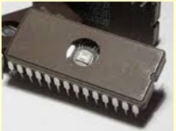
Utilisation de la grille de contrôle :
La grille de contrôle intervient à la fois pendant la phase d'utilisation, la phase de programmation, et la phase d'effacement du circuit.
Phase d'utilisation :
Pendant la phase d'utilisation du circuit, les grilles de contrôles de tous les transistors sont portées à 5 Volts. L'état de chaque transistor dépend de l'état de sa grille flottante :
- Grille flottante non chargée : Le potentiel de 5 V appliqué sur la grille de contrôle crée un champ électrique qui attire les électrons minoritaires du substrat. Cela induit un canal de conduction entre le drain et la source. Résultat : les transistors non programmés fonctionnent comme des points de connexion fermés (ON). 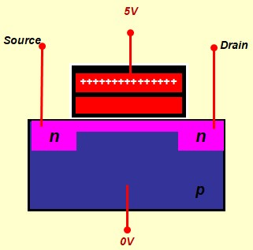
- Grille flottante chargée : La charge négative présente sur la grille flottante masque l'effet du potentiel de la grille de contrôle. Aucun canal de conduction n'est formé entre le drain et la source. Résultat : les transistors programmés agissent comme des points de connexion ouverts (OFF). 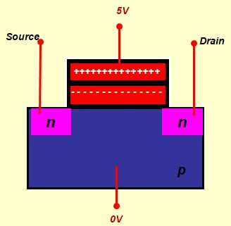
Phase de programmation :
Une tension élevée (≈ 20 V) est appliquée sur la grille de contrôle du transistor à programmer. Ce fort champ électrique provoque un effet tunnel ou injection par effet Fowler-Nordheim, qui transfère des électrons vers la grille flottante. Les électrons restent piégés sur la grille flottante après la suppression de la tension de contrôle, modifiant définitivement l'état du transistor.
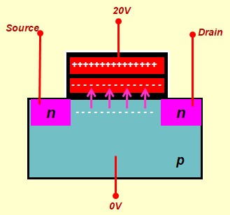Phase d'effacement :
Pendant cette phase, le circuit est placé sous une lampe à UV pendant une vingtaine de minutes. Les rayons ultraviolets fournissent l'énergie nécessaire pour libérer les charges et rétablir l'état initial du transistor. Pendant cette phase, le fait de porter la grille de contrôle à un potentiel inférieur à celui du substrat peut faciliter le retour des charges piégées à leur état initial. Une fois les charges éliminées, les transistors retrouvent leur état initial et peuvent être reprogrammés.
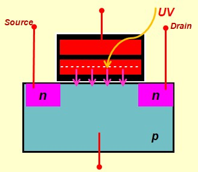Point de Connexion EEPLD
Un point de connexion EEPLD utilise un transistor à grille isolée qui a bénéficié d'un certain nombre d'améliorations technologiques afin qu'il puisse être reprogrammé électriquement sans nécessité d'un effacement par ultra-violets.
Les principales améliorations pour rendre les transistors à grille isolée effaçables électriquement incluent :
- Réduction de l'épaisseur de l'isolant entre la grille flottante et le substrat (200 Å),
- Amélioration des matériaux de l'oxyde isolant par l'utilisation de matériaux à haute permittivité diélectrique (high-k),
- Optimisation de la grille flottante pour une meilleure rétention des charges.
- Pour charger la grille flottante, on applique une tension élevée (typiquement entre +15V et +20V) sur la grille de contrôle pour générer un champ électrique suffisant qui provoque un transfert d'électrons vers la grille flottante par effet tunnel, 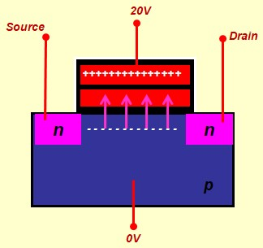
- Pour retirer les charges piégées dans la grille flottante et ramener le transistor à son état initial, on applique une tension élevée de sens inverse (typiquement entre -15V et -20V) sur la grille de contrôle. Cette tension inverse génère un champ électrique qui extrait les électrons de la grille flottante par effet tunnel. 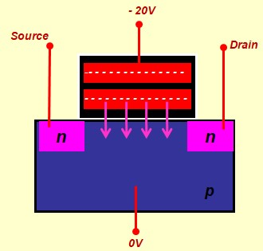
Lors de la phase d'utilisation, le point de connexion EEPLD s'utilise comme le point de connexion EPLD. les grilles de contrôles de tous les transistors sont portées à 5 Volts. L'état de chaque transistor dépend de l'état de sa grille flottante :
- Grille flottante non chargée : Le potentiel de 5 V appliqué sur la grille de contrôle crée un champ électrique qui attire les électrons minoritaires du substrat. Cela induit un canal de conduction entre le drain et la source. Résultat : les transistors non programmés fonctionnent comme des points de connexion fermés (ON).
- Grille flottante chargée : La charge négative présente sur la grille flottante masque l'effet du potentiel de la grille de contrôle. Aucun canal de conduction n'est formé entre le drain et la source. Résultat : les transistors programmés agissent comme des points de connexion ouverts (OFF).
Les blocs d'Entrée Sortie
Les blocs d'entrée/sortie (E/S) des circuits PLD sont des interfaces configurables qui permettent de connecter le circuit à des périphériques externes. Ils peuvent inclure des fonctionnalités telles que des tampons tri-état, des registres de capture, ou des options de polarité, offrant ainsi une grande flexibilité pour s'adapter aux exigences spécifiques des systèmes numériques.
Sortie 3 états
Les sorties sont souvent de type 3 états, ce qui permet de les déconnecter au besoin

Entrée Sortie
Une entrée-sortie est une broche qui peut être utilisée soit comme entrée soit comme sortie. Elle sert aussi à réinjecter la sortie avec les entrées ce qui permet l'étude des systèmes séquentiels
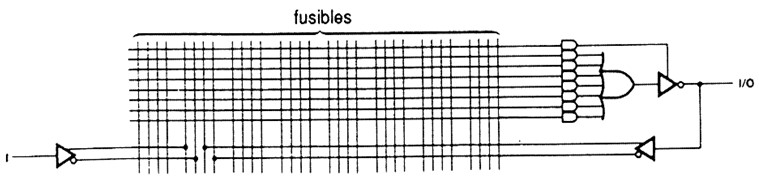Sortie combinatoire
Un sortie combinatoire peut être active au niveau haut, au niveau bas ou au choix :
- Type H : Sortie active au niveau Haut 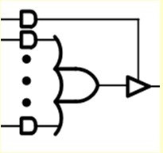
- Type L : Sortie active au niveau bas 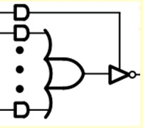
- Type C : Combinée: programmable en type H ou L
Sortie à registre
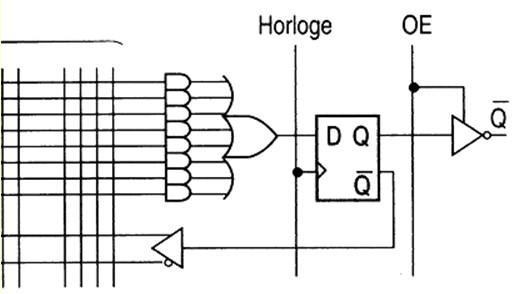- La sortie est mémorisée dans une bascule,
- Dans certaines versions, La bascule dispose d'entrées de forçage asynchrones, (Clear, Preset)
- Dans certaines versions, un XOR d'inversion programmable est inséré juste derrière la porte OR
Sortie versatile
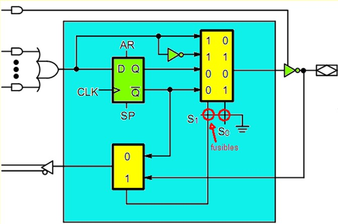E/S très souple qui peut être configurée dans différents modes en programmant les fusibles S0 et S1
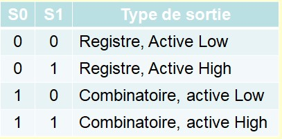Le circuit PAL16L8
C'est un circuit à sorties combinatoires (active Low). La référence est un peu trompeuse car elle précise 16 entrées et 8 sorties. En réalité, les sorties sont des E/S et sont comptées avec les entrée. Pour être précis, le circuit dispose de 10 entrées pures, 2 sorties pures et 6 Entrée-sorties.
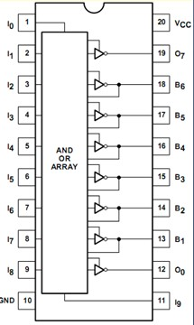 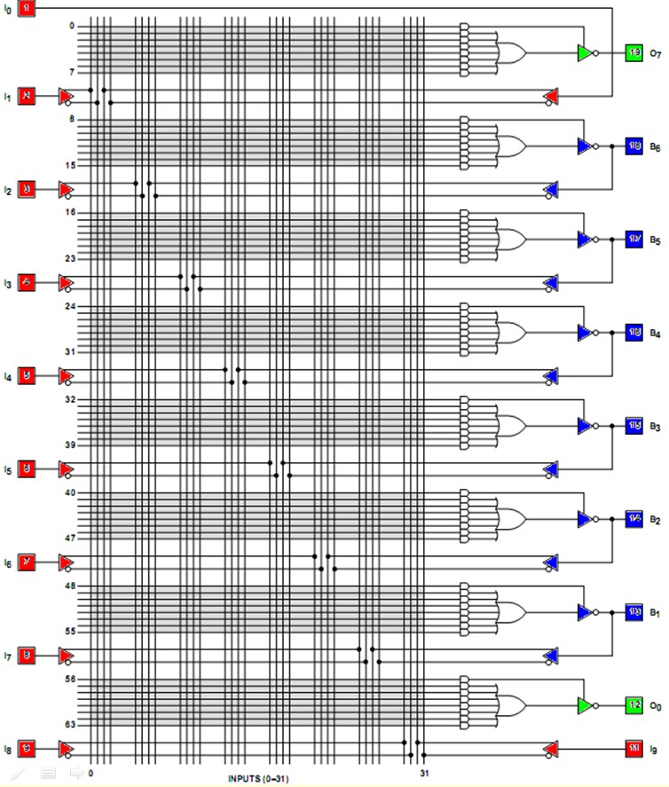Le circuit GAL22V10
Le circuit GAL22V10 était populaire à son époque. Il est reprogrammable grace à ses point de connexion de type EEPLD. Il dispose de 12 Entrée et de 10 E/S Versatiles
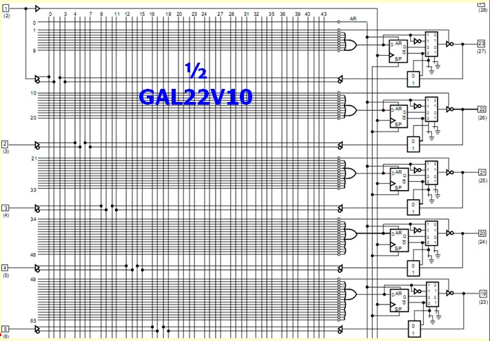Les CPLD
Les CPLD (circuits logiques programmables complexes ) constituent une évolution des circuits logiques programmables simples (comme les PAL et GAL) en offrant une capacité de logique plus importante et une flexibilité accrue. Voici quelques propriétés :
- Ils sont essentiellement de technologie EEPLD : Non volatiles et Reprogrammables
- Ils permette de réaliser des systèmes assez complexes: USART, contrôleur LAN, contrôleur graphique, contrôleur cache …
- Il sont caractérisés par un temps de propagation court et prédictible dû la structure d'interconnexion unique,
- Le nombre de LABs dans un circuit dépend des familles. Une dizaine à plusieurs centaines
Structure d'un circuit CPLD :
Un CPLD est constitué de trois ensembles principaux :
- Plusieurs blocs de type PLD appelés LAB (Logic Array Bloc). Chaque bloc (LAB) est constitué d'un ensemble de macrocellules permettant chacune de synthétiser une fonction logique comme c'est le cas dans un circuit 22V10 par exemple,
- Quelques blocs d'E/S pour se connecter à l'extérieure,
- Une matrice d'interconnection permettant de relier les LABs entre eux et avec les E/S. Elle est appelée PI ou PIA (Programmable Interconnect array)
Structure d'un LAB :
Chaque LAB est constitué de plusieurs macrocellules de type SPLD (16 en général).

Les macrocellules constituants les LAB CPLD sont plus élaborées que celles des SPLD.
Dans un PAL classique, chaque somme (OU) est connectée à un à un nombre fixe de produits (ET). Cependant, toutes ces produits ne sont pas toujours nécessaires pour synthétiser une fonction logique. Si tous les produits ne sont pas utilisés, ces ressources restent gaspillées.
Dans les macrocellules d'un LAB CPLD, on a ajouté une matrice de sélection de Produits (PTC - Product-Term Select Matrix), qui permet de rediriger les produits (ET) non utilisés vers d'autres macrocellules, ou si nécessaire, d'injecter des produits venant d'autres macrocellules. Ceci permet d' obtenir un meilleur taux d'utilisation des ressources.
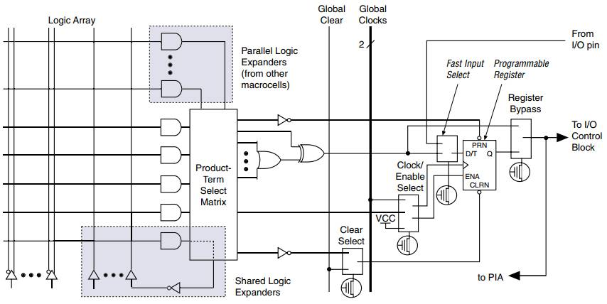Les FPGA
La technologie FPGA : Field-Programmable Gate Array est la catégorie de PLD la plus développée et la plus utilisée de nos jours. Sa capacité et ses performances sont bien supérieures à celles de la technologie CPLD. Les circuit FPGA sont plus flexibles et peuvent être configurés plusieurs fois, même après leur mise en service. Ils sont largement utilisés pour des applications complexes telles que le traitement du signal, les systèmes embarqués, en phase de prototypage et en produit final.
Parmi les caractéristiques principales des circuits FPGA on peut citer :
- Un circuit FPGA est constitué d'un grand nombre de blocs logiques programmables appelés CLB (Configurable Logic Blocks). Ces blocs sont répartis sur toute la surface de la puce et "baignent" dans une matrice d'interconnexion programmable, également distribuée sur toute la surface. Cette matrice permet de connecter les CLB entre eux et de les interfacer avec les blocs d'E/S programmables (IO ou IOB) qui entourent l'ensemble. Bien que les exigences de routage varient d'un circuit à l'autre, certaines caractéristiques communes peuvent être exploitées pour concevoir de manière optimale cette interconnexion. Par exemple, la plupart des conceptions présentent une certaine localité, ce qui nécessite une abondance de fils courts pour relier les CLB voisins. Cependant, il existe également des connexions à longue distance, ce qui implique le besoin de fils longs mais moins nombreux. En outre, la matrice d'interconnexion des FPGA est conçue de manière hiérarchique, avec des réseaux locaux pour connecter des blocs proches et des réseaux globaux pour relier des blocs plus éloignés. Cette architecture hiérarchique optimise l'utilisation des ressources et réduit les délais de propagation, ce qui en fait une solution adaptée aux conceptions complexes et dynamiques. 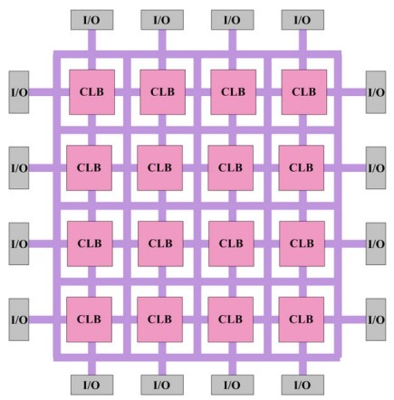
- La technologie FPGA a adopté le transistor MOS (normal) comme point de connexion. Ce choix présente plusieurs avantages : il est facile à fabriquer, et sa petite taille permet un taux d'intégration élevé. Cependant, le transistor MOS seul n'a pas de capacité de mémoire, l'état de chaque transistor étant uniquement défini par la tension de commande appliquée à sa grille. Pour pallier cette limitation, les circuits FPGA utilisent des cellules mémoire SRAM pour contrôler les grilles des transistors MOS. Ces cellules SRAM constituent la mémoire de configuration du circuit et définissent le comportement logique du FPGA. Cependant, les cellules SRAM sont volatiles, ce qui signifie qu'elles perdent leur état lorsque l'alimentation est coupée. Pour assurer la non-volatilité des données de configuration, les FPGA s'appuient sur une mémoire externe non volatile, généralement une EEPROM ou une mémoire flash. Lors de la programmation, les données de configuration sont enregistrées dans cette mémoire externe. Ainsi, à chaque mise sous tension du FPGA, l'ensemble de sa mémoire de configuration est initialisé à partir de la mémoire non volatile, permettant au circuit de retrouver son fonctionnement prévu. Cette approche combine la flexibilité de la reprogrammation avec la fiabilité des mémoires non volatiles. 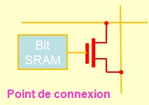 Pour une mailleur souplesse de la matrice de connexion, chaque point de connexion peut être constitué de plusieurs MOS (jusqu'à 6) pour augmenter le nombre de possibilités d'interconnexion. 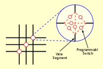
- Un bloc CLB (Configurable Logic Block) est constitué de plusieurs éléments logiques (LE : Logic
Element). Un LE est composé d'un bloc combinatoire permettant de réaliser une fonction logique,
suivi d'une bascule servant à la mémorisation ou à la synchronisation des données.
Le bloc CLB d'un FPGA est généralement plus petit qu'un bloc logique de CPLD, mais une puce FPGA contient beaucoup plus de blocs que ce que peut offrir un CPLD de taille équivalente (die size). La taille des blocs CLB détermine la granularité, qui peut être plus ou moins fine dans un FPGA. Une granularité fine améliore le taux d'utilisation des ressources logiques du circuit, mais elle augmente les besoins en ressources d'interconnexion. Dans le cas d'une granularité très fine, un bloc peut être réduit à un seul LE, consistant uniquement en un petit bloc combinatoire et une bascule. Cette configuration offre une grande flexibilité, mais impose une gestion optimisée de l'interconnexion pour éviter une augmentation des délais de propagation et de la consommation énergétique.
Cellule SRAM :
La cellule SRAM est réalisé à l'aide de transistors MOS. Elle est constituée de deux inverseurs monté tête-bêche
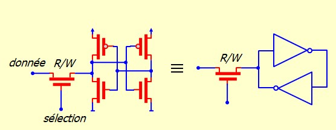Le LUT : Look Up Table
Dans un FPGA, le bloc combinatoire n'est pas réalisé par une matrice de portes ET et OU, comme c'est
le cas des PLD classiques. Au lieu de cela, on utilise un LUT (Look-Up Table) pour accomplir cette
tâche.
Un LUT est un multiplexeur conçu pour implémenter une fonction logique. Les entrées du multiplexeur
sont connectées à une mémoire SRAM préprogrammée avec la table de vérité de la fonction logique à
réaliser. Les variables de la fonction servent à commander les lignes de sélection du multiplexeur,
permettant ainsi de produire la sortie logique correspondante.
La réalisation des multiplexeurs se fait entièrement à l'aide de transistor MOS. On commence par réaliser un multiplexeur 2:1 à l'aide de quatre transistor MOS (inverseur = deux transistors)
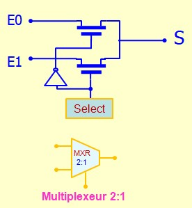L'association en pyramide des multiplexeurs 2:1 permet d'obtenir des multiplexeurs plus grads
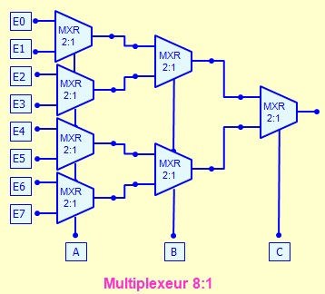Exemple d'un LE
C'est exemple montre un LE du constructeur Altera. Il est conçu pour offrir une grande souplesse d'utilisation
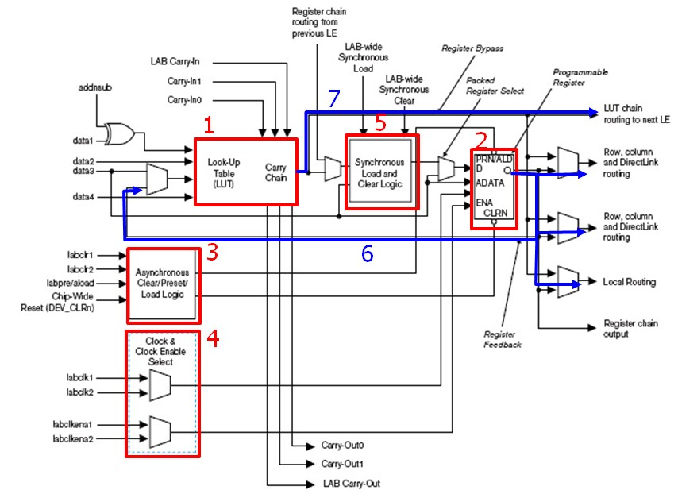- Bloc combinatoire constitué d'un LUT et d'un bloc Carry pour l'extension
- La bascule peut être programmée en bascule D, T, JK ou RS
- CLR, PRESET, Chargement Asynchrones
- Horloge et Validation d'horloge
- Chargement Synchrone
- La sortie de la bascule peut être envoyée vers le réseau d'interconnexion ou réinjectée à l'entrée du bloc combinatoire
- On peut utiliser seulement le bloc combinatoire sans passer par la bascule 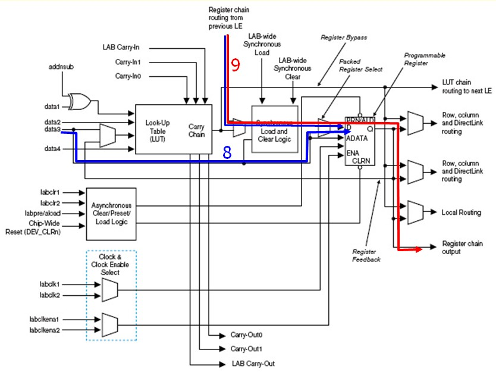
- On peut utiliser la bascule seule sans passer par le bloc combinatoire
- La bascule peut être chaînée avec d'autres bascules pour faire des registres à décalage par exemple 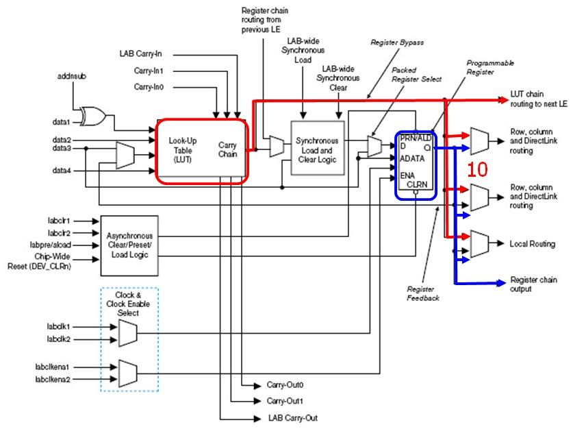
- Le LUT et le registre peuvent être utilisés séparément mais simultanément